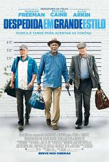
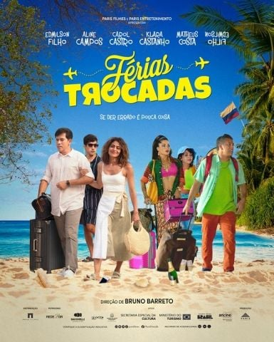

Despedida em Grande Estilo

Gênero: Comédia
Lançamento: 2017
Assistir trailer
Nota: ⭐⭐⭐⭐⭐⭐⭐⭐⭐☆ (09/10)
Desesperados para pagar as contas e corresponder às expectativas de seus amados, os amigos Willie, Joe e Albert arriscam tudo em um lance ousado para roubar o banco que desapareceu com o dinheiro deles....

Gênero: Comédia
Lançamento: 2024
Assistir trailer
Nota: ⭐⭐⭐⭐⭐⭐⭐⭐☆☆ (08/10)
Pai de família e pão duro, Zé ganha uma rifa e consegue uma viagem para toda sua família até Cartagena. Edu é um empresário preconceituoso que vai para o mesmo destino que Zé. Chegando lá, ambos os homens acabam indo para endereços errados e uma troca de família com o outro: Zé acaba indo para o resort cinco estrelas de Edu, e Edu vai parar na pousada barata de Zé...